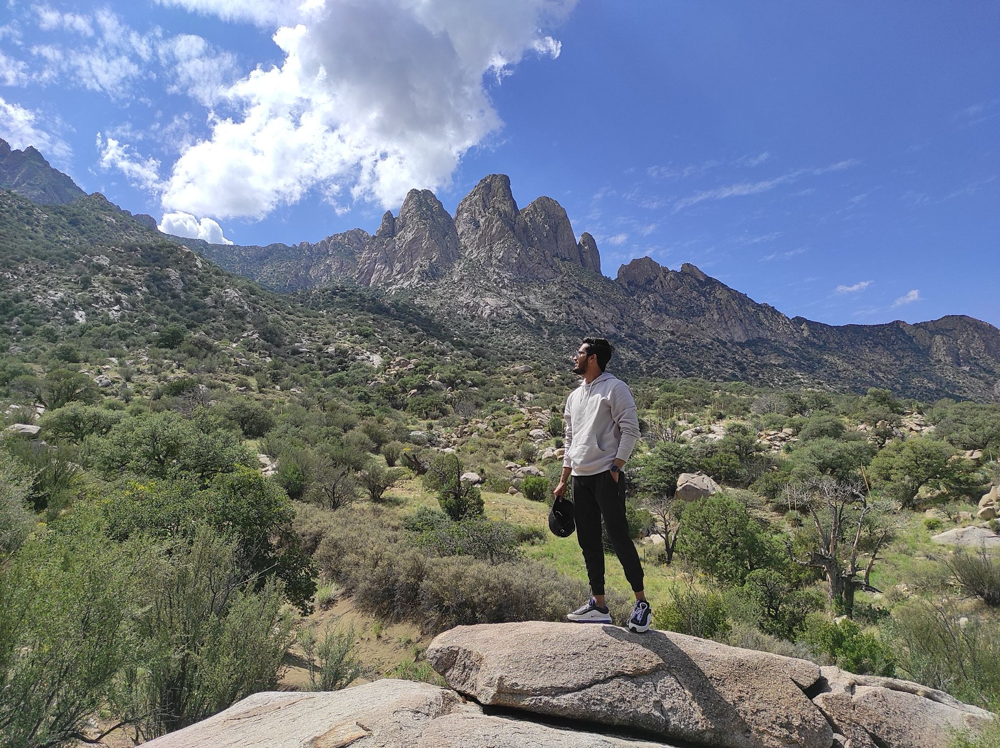
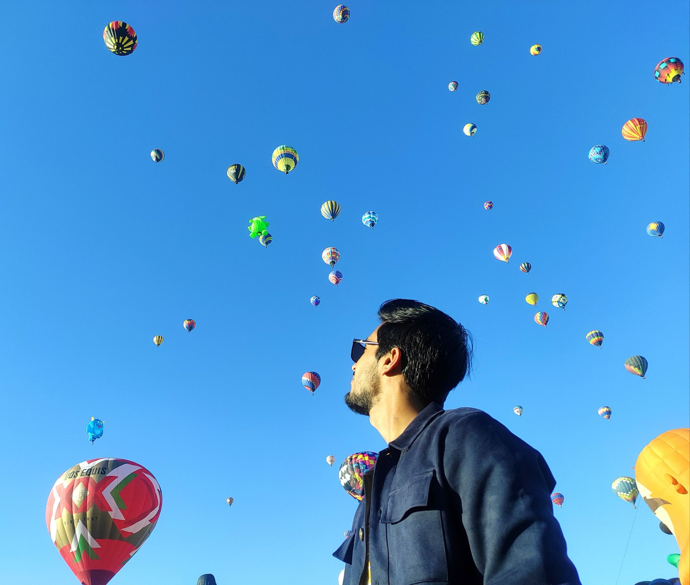
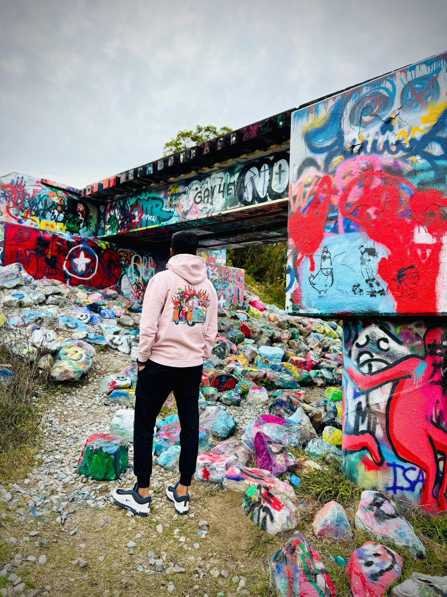
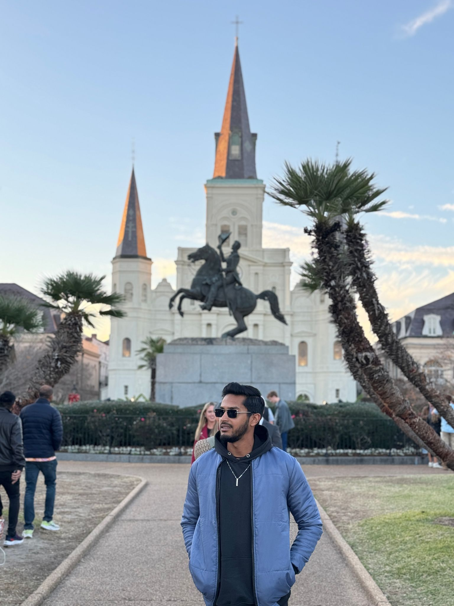
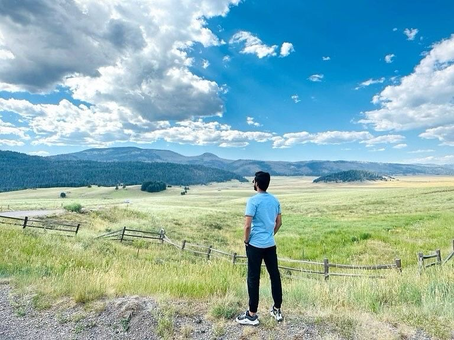
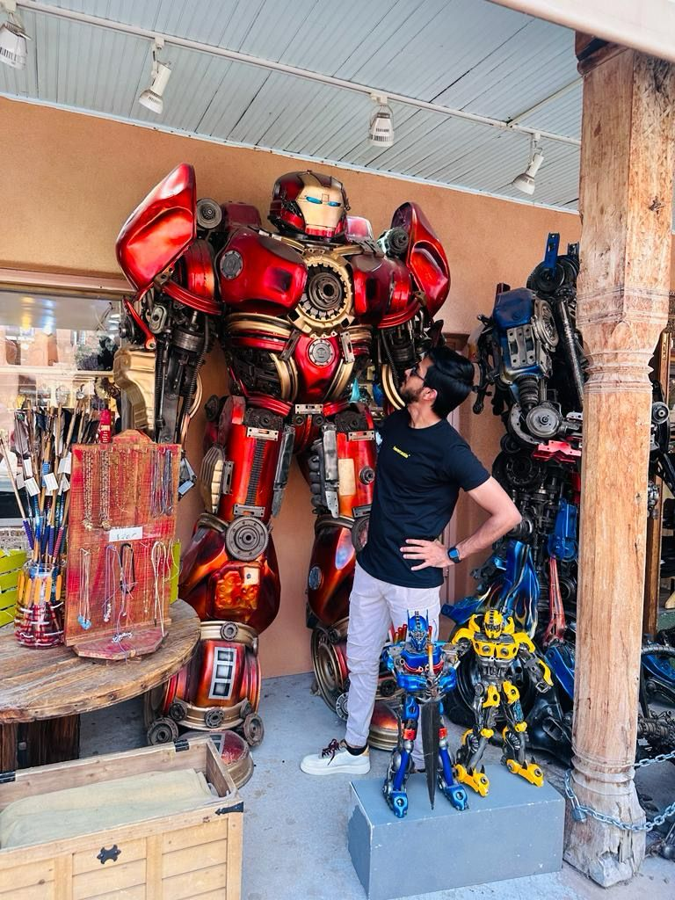
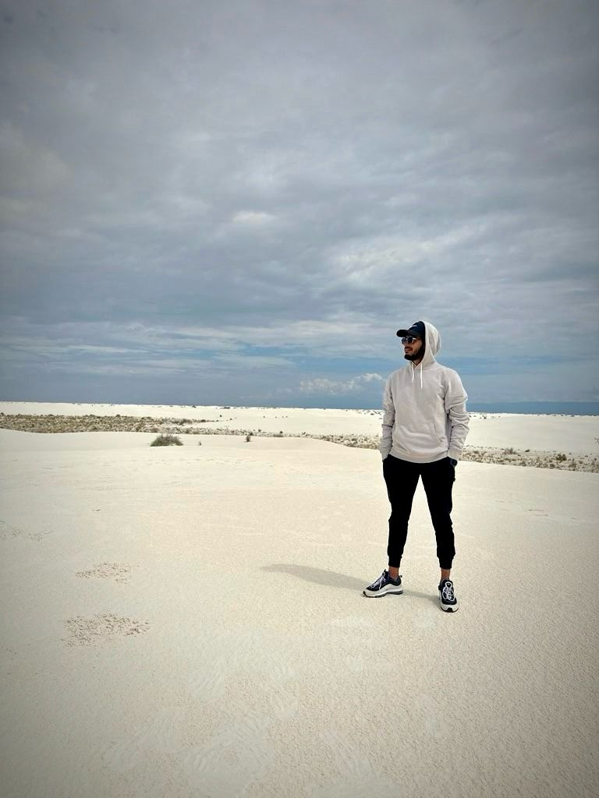

MY TRAVEL DIARY
Aguirre Spring
Aguirre Spring Recreation Area is located on the east side of the Organ Mountains. At nearly 5,000 feet, it is the highest elevation of any campground in the Las Cruces/El Paso/Juarez region, where cooler summer temperatures and remarkable vistas make it a regional attraction. Join me on the sandy beaches of Bali, where the sunsets are magical and the waves whisper tales of the ocean. Explore lush landscapes, ancient temples, and vibrant local markets. Bali is more than a destination; it's a journey of tranquility and culture.
Albuquerque International Balloon Fiesta
Albuquerque in October takes on a fascinating 30-degree jump occurring between 4:30 am and 12:00 pm, so the best advice we have for you is this: LAYER! Come dressed warmer than you think you need to be, and pack a bag that will be able to hold all of your discarded layers as you continue to shed your winter wear.
Graffiti Bridge, Florida
Discover the vibrant street art and cultural expressions at the iconic Graffiti Bridge in Florida. Each stroke of paint tells a unique story, creating a kaleidoscope of creativity against the urban backdrop.
Jackson Square, Louisiana
Immerse yourself in the historical charm of Jackson Square in Louisiana. From lively street performances to the iconic St. Louis Cathedral, every corner exudes the rich cultural heritage of the region.
Way to Los Alamos
Embark on a scenic journey to Los Alamos, where breathtaking landscapes and winding roads unfold. Experience the beauty of the journey as you make your way to this historic and picturesque destination.
Mississippi River Bridge
Marvel at the grandeur of the Mississippi River Bridge as it spans across the river, connecting communities and offering spectacular views. Explore the surrounding areas and soak in the cultural significance of this iconic bridge.
Santa Fe
Experience the artistic and cultural richness of Santa Fe. From adobe architecture to vibrant art scenes, Santa Fe captivates with its unique blend of tradition and contemporary expression.
White Sands
Step into the surreal beauty of White Sands, where endless dunes of white gypsum create a mesmerizing landscape. Explore the untouched natural wonder and witness the play of light and shadow on the pristine sands.